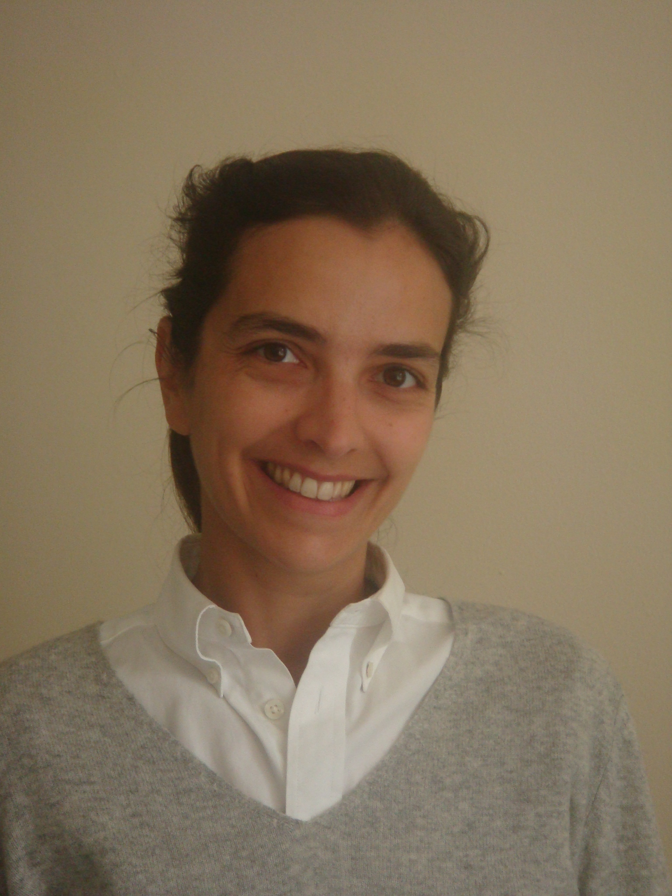

|
Pauline Barrieu
Professor in Statistics
Head of the Statistics Department
Vice Chair of Academic Board
|
|
 |
Office: Columbia House, Room COL 6.03
|
Post: |
Department of Statistics
London School of Economics
Houghton Street
London, WC2A 2AE
United Kingdom |
Phone: +44 (0)20 7955 6016
Email:
p.m.barrieu@lse.ac.uk |
Recent Publications
Curriculum Vitae (January 2023) (pdf format)
Dialogues around Models and Uncertainty (published by World Scientifc. (May 2020))
The Handbook of Insurance-Linked Securities (Co-edited by Luca Albertini, published by Wiley. (July 2009))
Gearty Grilling - Interview on Modelling
Podcast “L’oreille mathematique" (Institut Henri Poincare)
Other duties and professional activities
Associate editor of Annals of Applied Probability
Associate editor of SIAM Journal on Control and Optimization
Associate editor of Insurance Mathematics and Economics
Associate editor of Stochastic Processes and Their Applications
Member of the Editorial board of SpringerBriefs in Quantitative Finance series
Member of the Bruti Liberati Prize (Bachelier Finance Society)
Member of the Probability in Finance and Insurance Group
Research Interests
Model uncertainty.
Insurance-linked securitization.
Contract designing.
Microinsurance, weather derivatives.
Environmental economics.
MPhil/PhD Studies
Research studies in the Statistics department.
London Graduate School in Mathematical Finance.
London Taught Course Centre for PhD Students in Mathematical Sciences.
LSE Home Page |
Departmental Home Page
[Last modified: March 2023 by P. Barrieu]
© London School of Economics and Political Science 2023